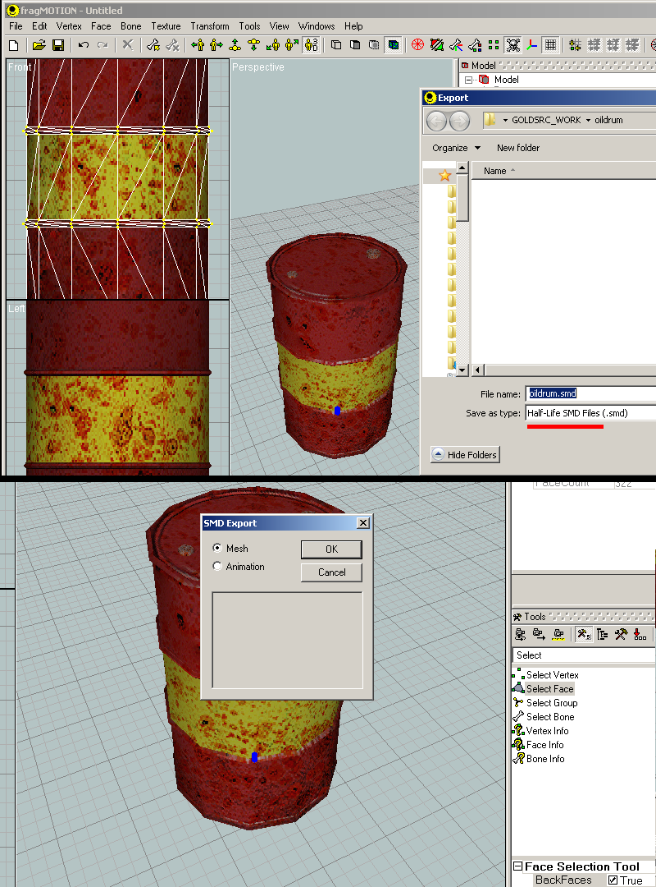
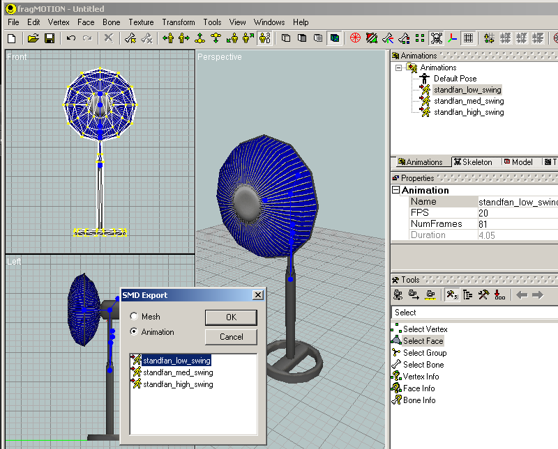
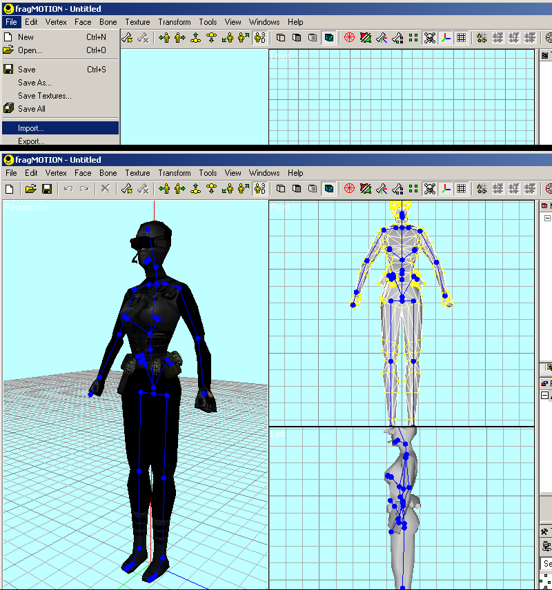
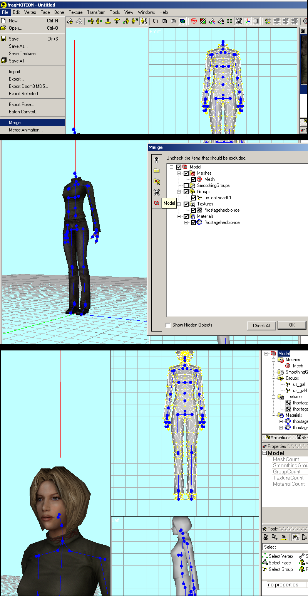
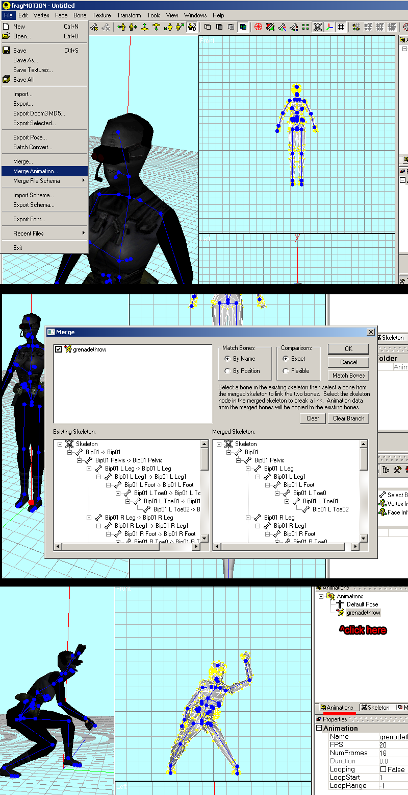

fragMOTION comes with SMD export/import ability right out of the box so no additional downloads are needed. FragMOTION is an older style 3D editor that only supports editing in triangles, so you wont be able to work with edge loops or edge selection. FragMOTION has several advantages when it comes to easy GoldSrc model editing such as having a powerful "merge animation" feature and being able to do volatile edits to models such as smoothing groups & appending bones without risk of breakage unlike some other programs. It also has a handy animation list for multiple animations.
Important note: do NOT use the fragMOTION's built-in Decompiler as its outdated along with the"compile" tool. Use Crowbar for all your compiling/decompiling needs.
Jump to Exporting Animations Jump to Importing Meshes Jump to Importing Animations
Exporting Reference Mesh
Note: If you have a static model with no bones skinned you need to assign a bone or else the SMD with fail to compile. An easy way is to go to "Bone" under the "Create 3D" rollout then press the "Execute" button to create one at scene origin. Then go to "Bone" at top menu and "auto assign verticies" and choose "All Verticies" & "Nearest Bone".
1) File > export "Half-Life SMD Files (smd)"
2) Check "Mesh" at the options box.

Exporting Animation Sequence
Important note: FragMOTION uses Linear Interpolation for all new animations. If you have made a custom animation and would like smooth interpolation you can save your document as .md3d and open MilkShape3d to export as SMD. Imported animations are all keyframed on each frame so imports are fine.
1) Go to File > export "Half-Life SMD Files (smd)"
2) Check "Animation" at the options box, and then choose which animation in the list to export.

Importing Reference Mesh
1) Go to File > Import and choose SMD file

1a) For multiple mesh parts, unlike other programs fragMOTION uses "Merge" to combine instead of a second import. (In fragmotion each import starts a new document).
Got to File > "Merge" and import your second SMD. You will get a window with merging options. Click the model tab for a simpler view. By default you should just be able to press OK without changing anything.

Importing Animation
1) With a mesh imported Go to File > "Merge Animation" and choose SMD file. You will be presented with a merging window. By default you can just press OK if this animation is from the reference model. Now with this powerful option you CAN import some bones with sightly or totally different bones, but it requires careful review of the import list options on left and right.
 Note: You can import just an animation SMD on its own without an imported mesh, just choose "import" as normal, and click the animation tab and animations to see it, as importing just an animation has no default pose so upon import all bones will be at 0 0 0. Now merging a mesh after the fact ive found causes huge errors, so its best to import mesh first then merge in animations as above.